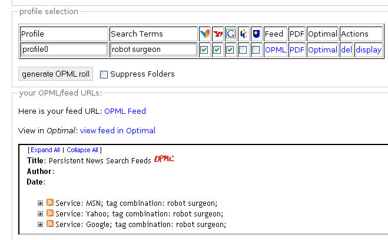
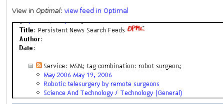

On Friday, I had a quick tinker with the Persistent News Search OPML FeedRoller and added a couple of links from it that already exist in the Social Bookmarking Feedroller - e.g. links to an OPML2PDF service, and an online OPML file for each profile. As a proof of concept, I also added an embedded OPML viewer (Optimal into the page (please don't hammer this - I haven't had chance to install my own copy of the viewer onto a local server so it's being called from http://optimalbrowser.com/ at the moment):

The results from each feed can also be viewed:

What the viewer does is allow you to inspect the feeds returned from each profile within the OPML feedroller page.
Now this was v easy to do, and it has got me thinking about how easy it is to cobble together federated search engines when easy to use interfaces exist. (I'm still waiting for a Z39.50 to RSS service to appear somewhere, but in the meantime I'll just have to keep trawling for OpenSearch interfaces.)
So - here are three things I'm going to be mulling over, over the next few days:
- OPML feedrolled persistent searches viewed in Optimal;
- history searching; and
- searches over socially bookmarked sites (e.g. deliSearch).
All of these are potentially sensitive to the user - either helping you rediscover things you've seen, or thought memorable in the past - or allowing you to set up persistent searches in collections/over sources you trust.
And the idle question I'll have in mind to start things off will be whether these sorts of thing may be useful for students, and if so where, and how we'd make the search box available, and perhaps more importantly, how we'd make the search results available.
PS if you want to try the persistent news search with embedded viewer, there's a demo here.
Posted by ajh59 at May 21, 2006 09:07 PM